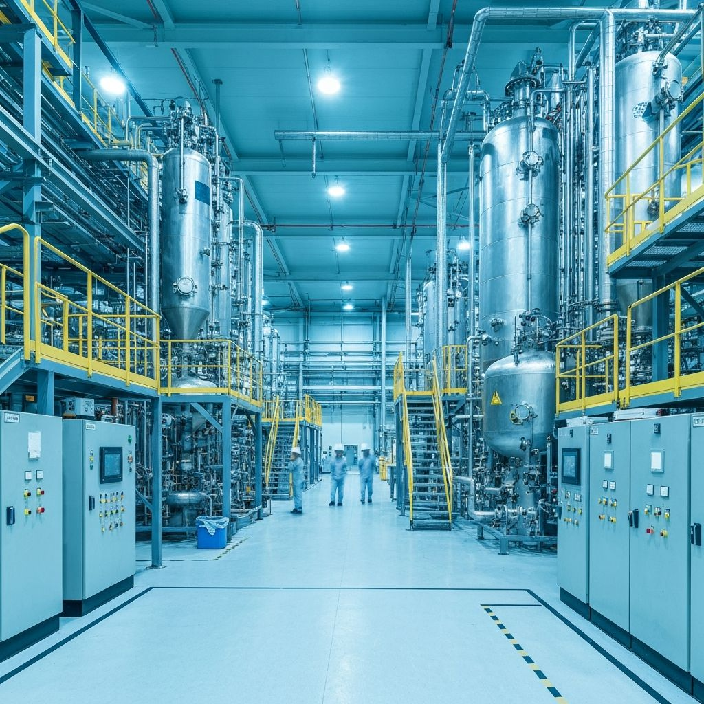
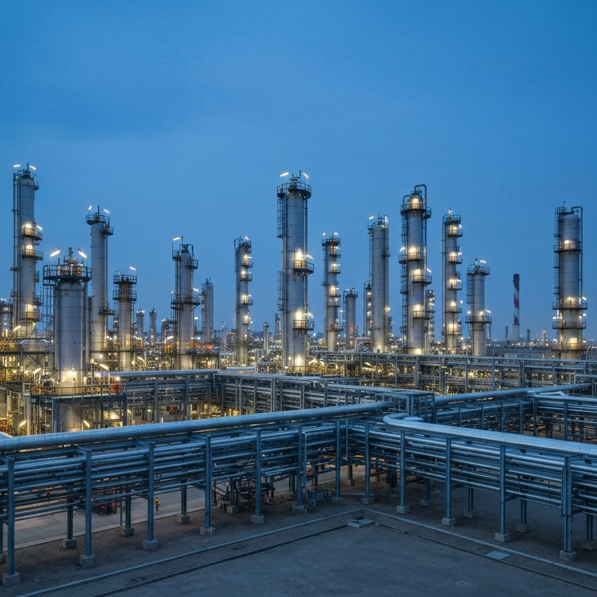

Real-world examples of our safety consultancy in action
Our work delivers measurable safety and compliance outcomes for clients across construction, chemical, and petrochemical sectors. The following case studies demonstrate how we translate expert knowledge into practical solutions that protect people, satisfy regulators, and enable operational delivery.
Supporting a major tier-one contractor with CDM-compliant documentation for a large-scale industrial construction project, achieving zero RIDDOR incidents over 14 months.
Read Full Case Study
Comprehensive COSHH re-assessment programme and updated SOP library enabling a chemical plant to pass regulatory audit with no enforcement notices.
Read Full Case Study
Bespoke SIMOPS plan and multi-permit framework enabling on-schedule completion of a complex petrochemical turnaround with zero lost-time incidents.
Read Full Case StudyContact us to discuss how we can support your project with proven safety expertise.
Talk to Us